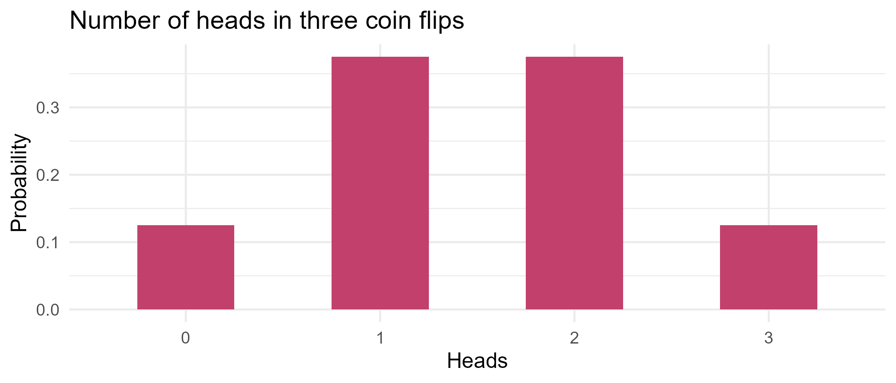
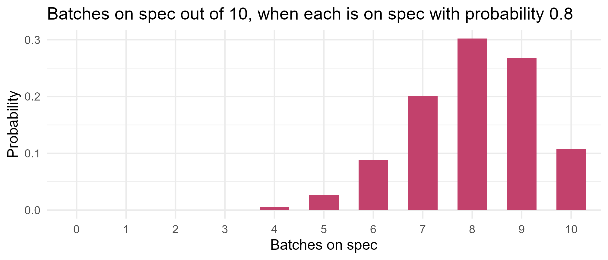

Module 0 · Lesson 9 of 14 Week 9 of 160 About 5–7 hours
Discrete random variables
Expected value, variance, and the binomial and Poisson distributions
Describe random counts with probability distributions, compute expected values and variances, and use the binomial and Poisson distributions with R’s d/p/q/r functions.
Most engineering questions are about numbers, not just events. How many of today’s 10 batches will be on spec? How many alarms will go off during the next run? How many leaky drums will turn up in a shipment of 200? A random variable is a number whose value depends on chance, and its probability distribution says which values it can take, and how likely each one is. This lesson is about random variables that count things, and the two distributions that describe most counts: the binomial and the Poisson.
Today you’ll meet the first two members of a big family: probability distributions. Each one is a ready-made model for a common kind of randomness. Learn to recognize them, and lots of problems become one line of R.
In this lesson you’ll:
- describe a random count with its probability distribution
- compute expected values, and use them to make decisions
- compute variances and standard deviations
- recognize binomial and Poisson situations
- use R’s
d,p,qandrfunctions - check a model against real data, and by simulation
Random variables
A random variable is usually written with a capital letter, like X, and its possible values with lowercase letters, like x. It’s discrete if you can list its values, which are typically counts: 0, 1, 2, and so on. It’s continuous if it can take any value in a range, like a temperature or a time. That’s the next lesson.
The distribution of a discrete random variable is given by its probability mass function (PMF), p(x) = P(X = x): the probability of each possible value. The probabilities are between 0 and 1, and they add up to 1.
Let X be the number of heads in three fair coin flips. List the 8 equally likely outcomes, and count the heads in each:
flips <- expand.grid(flip1 = 0:1, flip2 = 0:1, flip3 = 0:1) # 1 = heads
heads <- rowSums(flips)
pmf <- table(heads) / nrow(flips)
pmf
#> heads
#> 0 1 2 3
#> 0.125 0.375 0.375 0.125Show the code
ggplot(data.frame(x = 0:3, p = as.numeric(pmf)), aes(x = factor(x), y = p)) +
geom_col(width = 0.5, fill = "#C2416C") +
labs(title = "Number of heads in three coin flips", x = "Heads", y = "Probability") +
theme_minimal(base_size = 12)
Expected value
The expected value (or mean) of X is the average of its possible values, each weighted by its probability:
E(X) = \mu = \sum_x x \, p(x) .
It’s the long-run average: the mean of X over many repetitions. For a fair die, each face has probability 1/6:
x <- 1:6
p <- rep(1/6, 6)
sum(x * p)
#> [1] 3.5You can never roll a 3.5, but over thousands of rolls, the average is 3.5.
Expected values make decisions
Here’s where it gets useful. Each batch that’s on spec earns the plant 5,000 dollars. An off-spec batch has to be reworked or thrown away, which costs 2,000 dollars. If 80% of batches are on spec, what does a batch earn on average?
profit <- c(5000, -2000) # on spec, off spec
prob <- c(0.8, 0.2)
sum(profit * prob)
#> [1] 36003,600 dollars per batch, in the long run. Now you can compare options: anything that changes the probabilities or the payoffs changes this number, and you’ll put that to work in a moment.
Expected values follow simple rules. For any numbers a and b, and any random variables X and Y:
E(aX + b) = a\,E(X) + b, \qquad E(X + Y) = E(X) + E(Y) .
Your turn. Here’s the distribution of alarms per batch in our reactor data: 7 of the 39 batches had no alarms, 19 had one, 9 had two and 4 had three. Compute the expected number of alarms per batch.
E(X) = \sum x\,p(x): multiply the vectors element by element, then add up.
x <- 0:3
p <- c(7, 19, 9, 4) / 39
sum(x * p)About 1.26 alarms per batch, exactly the mean of the alarm column. The expected value of a distribution built from data is just the data’s mean.
Your turn: is the new catalyst worth it? A new catalyst raises the on-spec rate from 80% to 90%, but it costs an extra 800 dollars per batch. Compute the expected profit per batch with the new catalyst. Is it better than the old 3,600?
With the new catalyst, a batch is on spec with probability 0.9 and off spec with probability 0.1.
profit <- c(5000 - 800, -2000 - 800)
prob <- c(0.9, 0.1)
sum(profit * prob)3,500 dollars: 100 dollars less per batch than the old catalyst. The better on-spec rate doesn’t pay for itself. (It would at a price below 700 dollars.)
Variance and standard deviation
The variance of X measures how far its values typically fall from the mean \mu:
\text{Var}(X) = \sigma^2 = \sum_x (x - \mu)^2 \, p(x) = E(X^2) - \mu^2 ,
and the standard deviation is \sigma = \sqrt{\text{Var}(X)}, in the same units as X. For the die:
mu <- sum(x * p)
sum((x - mu)^2 * p) # the definition
#> [1] 2.916667
sum(x^2 * p) - mu^2 # the shortcut gives the same answer
#> [1] 2.916667
sqrt(sum((x - mu)^2 * p)) # the standard deviation
#> [1] 1.707825Variances follow their own rules. Adding a constant doesn’t change the spread, but multiplying by a multiplies the variance by a^2. And if X and Y are independent, their variances add:
\text{Var}(aX + b) = a^2\,\text{Var}(X), \qquad \text{Var}(X + Y) = \text{Var}(X - Y) = \text{Var}(X) + \text{Var}(Y) .
Yes, \text{Var}(X - Y) is a sum too. Subtracting a random quantity adds uncertainty, just as adding one does. That’s why the uncertainty in a difference, like “inlet temperature minus outlet temperature”, is bigger than the uncertainty in either reading. It’s also behind the two-sample tests of Lesson 13.
NoteGo deeper: the shortcut formula
Expand the square, and use the rules for expected values (remember that \mu is a constant):
E\big[(X - \mu)^2\big] = E\big[X^2 - 2\mu X + \mu^2\big] = E(X^2) - 2\mu E(X) + \mu^2 = E(X^2) - 2\mu^2 + \mu^2 = E(X^2) - \mu^2 .
The same algebra, with a little more bookkeeping, proves \text{Var}(aX + b) = a^2\text{Var}(X). The rule \text{Var}(X + Y) = \text{Var}(X) + \text{Var}(Y) needs independence: in general there’s an extra term, 2\,\text{Cov}(X, Y), which you’ll meet in Module 3.
Your turn. Compute the variance of the alarm distribution from the definition, \sum (x - \mu)^2 p(x).
(x - mu)^2 gives the squared deviations. Weight them by p and add up.
x <- 0:3
p <- c(7, 19, 9, 4) / 39
mu <- sum(x * p)
sum((x - mu)^2 * p)About 0.75. (var() on the raw alarm counts gives 0.77 instead, because it treats them as a sample and divides by n - 1.)
The binomial distribution
The simplest random variable has just two values: 1 for “success” with probability p, and 0 for “failure” with probability 1 - p. That’s a Bernoulli random variable, like a single batch being on spec or not. “Success” just means the outcome you’re counting, even when it’s something bad, like a leaky drum.
Count the successes in a fixed number of these trials, and you get a binomial random variable. It applies when four conditions hold:
- There’s a fixed number of trials, n.
- The trials are independent.
- Each trial has two outcomes: success or failure.
- The probability of success, p, is the same for every trial.
The number of successes X then has the PMF
P(X = k) = \binom{n}{k} p^k (1-p)^{n-k}, \qquad k = 0, 1, \dots, n .
Here’s why. Any particular sequence with k successes and n - k failures has probability p^k (1-p)^{n-k}, by independence. And there are \binom{n}{k} ways to choose which k of the trials are the successes. The mean and variance are
E(X) = np, \qquad \text{Var}(X) = np(1-p) .
Back to the plant: each batch is on spec with probability 0.8, independently. Out of 10 batches, the number on spec is binomial with n = 10 and p = 0.8:
dbinom(8, size = 10, prob = 0.8) # P(X = 8)
#> [1] 0.3019899
pbinom(6, size = 10, prob = 0.8) # P(X <= 6)
#> [1] 0.1208739
1 - pbinom(8, size = 10, prob = 0.8) # P(X >= 9) = 1 - P(X <= 8)
#> [1] 0.3758096Show the code
ggplot(data.frame(k = 0:10, p = dbinom(0:10, 10, 0.8)), aes(x = factor(k), y = p)) +
geom_col(width = 0.6, fill = "#C2416C") +
labs(title = "Batches on spec out of 10, when each is on spec with probability 0.8",
x = "Batches on spec", y = "Probability") +
theme_minimal(base_size = 12)
The distribution peaks at the mean, np = 8, and it’s skewed left, because the count can’t go above 10. With p = 0.5 it would be symmetric, and as n grows it looks more and more like a bell curve, for reasons Lesson 11 explains.
Your turn. What’s the probability that all 10 batches are on spec?
dbinom(x, size, prob) gives P(X = x). Here x = 10.
dbinom(10, size = 10, prob = 0.8)About 0.107, which is just 0.8^{10}. A perfect day happens about one day in ten.
R’s d, p, q and r functions
Every distribution in R comes with four functions, named with a one-letter prefix plus the distribution’s short name:
| Prefix | Gives you | Binomial example |
|---|---|---|
d |
the probability P(X = x) (the density, for continuous variables) | dbinom(8, 10, 0.8) |
p |
the cumulative probability P(X \le x) | pbinom(6, 10, 0.8) |
q |
the quantile: the smallest x with P(X \le x) at least the given probability | qbinom(0.5, 10, 0.8) |
r |
random draws from the distribution | rbinom(5, 10, 0.8) |
qbinom(0.5, 10, 0.8) # the median
#> [1] 8
set.seed(1)
rbinom(5, 10, 0.8) # five simulated days of 10 batches
#> [1] 9 9 8 6 9The same pattern works for every distribution in this course: dpois(), pnorm(), qt(), rexp() and so on.
Quantiles have a neat quality-control use. Over 100 batches, we’d expect 80 on spec. But how low can the count go before you should worry?
qbinom(0.05, size = 100, prob = 0.8)
#> [1] 73If the process is working normally, there’s only about a 5% chance of 73 or fewer on-spec batches. So a count below that is a sign that something has changed. That’s the idea behind control charts, used in every chemical plant.
Warning“At least” means subtracting one less
pbinom(k, ...) is P(X \le k), so P(X \ge k) = 1 - P(X \le k - 1), which is 1 - pbinom(k - 1, ...). Writing 1 - pbinom(k, ...) gives P(X > k) instead, and it’s a very common mistake.
Your turn. A shift runs 12 batches, each on spec with probability 0.8. The shift hits its target if at least 10 batches are on spec. What’s the probability of hitting the target?
P(X \ge 10) = 1 - P(X \le 9).
1 - pbinom(9, size = 12, prob = 0.8)About 0.56: a target that’s missed nearly half the time is probably a bit too ambitious!
Your turn. A filling line makes 4% leaky drums. In a shipment of 200 drums, how many leaky ones do you expect, and with what standard deviation? Return the mean and the standard deviation, in that order.
The mean is np and the variance is np(1-p). Don’t forget the square root for the standard deviation.
n <- 200
p <- 0.04
c(mean = n * p, sd = sqrt(n * p * (1 - p)))The Poisson distribution
Many counts have no fixed number of trials: the alarms during a batch, the leaks in a pipeline per year, the bubbles in a sheet of glass, the emails in an hour. If events happen independently, at a constant average rate \lambda (lambda) per interval, the count is Poisson:
P(X = k) = \frac{e^{-\lambda} \lambda^k}{k!}, \qquad k = 0, 1, 2, \dots
Its mean and its variance are both \lambda. Say process alarms go off at an average rate of 1.5 per batch:
dpois(2, lambda = 1.5) # P(exactly 2 alarms)
#> [1] 0.2510214
ppois(2, lambda = 1.5) # P(at most 2)
#> [1] 0.8088468
1 - ppois(4, lambda = 1.5) # P(more than 4)
#> [1] 0.01857594Does a Poisson model fit real data?
For a Poisson, the mean and variance are equal. Let’s check our alarm counts:
batches <- read.csv("data/reactor_batches.csv")
alarms <- batches$alarms[!is.na(batches$alarms)]
c(mean = mean(alarms), variance = var(alarms))
#> mean variance
#> 1.2564103 0.7746289
observed <- table(factor(alarms, levels = 0:5))
expected <- round(length(alarms) * dpois(0:5, lambda = mean(alarms)), 1)
rbind(observed = as.numeric(observed), expected = expected)
#> [,1] [,2] [,3] [,4] [,5] [,6]
#> observed 7.0 19.0 9.0 4.0 0.0 0.0
#> expected 11.1 13.9 8.8 3.7 1.2 0.3Not a perfect match: there are fewer alarm-free batches than a Poisson predicts, and the variance is a bit low. But with only 39 batches, a sample can easily wander that far from its model. (Lesson 13 shows how to judge that properly.)
Compare a real industrial dataset, warpbreaks: the number of times the yarn broke on looms, during weaving:
c(mean = mean(warpbreaks$breaks), variance = var(warpbreaks$breaks))
#> mean variance
#> 28.14815 174.20405The variance is six times the mean! Statisticians call this overdispersion. The breaks don’t happen at one constant rate: they depend on the wool type and the tension, and some looms are simply worse than others. A model is only as good as its assumptions, and checking it against data is part of the job. Module 5 meets the gamma-Poisson model, a classic way to handle counts like these.
NoteGo deeper: the Poisson as a limit of the binomial
Split a batch into n tiny intervals, each with a small chance p = \lambda/n of an alarm. The number of alarms is binomial with mean np = \lambda, and
P(X = k) = \binom{n}{k}\left(\frac{\lambda}{n}\right)^k\left(1 - \frac{\lambda}{n}\right)^{n-k} .
As n \to \infty, \binom{n}{k} / n^k \to 1/k! and \left(1 - \frac{\lambda}{n}\right)^n \to e^{-\lambda}, a limit you may remember from calculus, so the binomial probability tends to e^{-\lambda}\lambda^k/k!. In practice, the Poisson is a good approximation to the binomial when n is large and p is small. The first challenge below checks how good.
Summing the series also confirms the mean: E(X) = \sum_k k\,\frac{e^{-\lambda}\lambda^k}{k!} = \lambda e^{-\lambda} \sum_{k \ge 1}\frac{\lambda^{k-1}}{(k-1)!} = \lambda e^{-\lambda} e^{\lambda} = \lambda.
Your turn. A pump’s seal leaks 0.5 times a year on average. What’s the probability of no leaks at all this year?
Use the Poisson’s d function, with lambda = 0.5, for exactly 0 leaks.
dpois(0, lambda = 0.5)About 0.61, which is just e^{-0.5}.
Your turn. Alarms go off at 1.5 per batch on average. A batch with more than 3 alarms triggers an investigation. What’s the probability that a batch gets investigated?
“More than 3” is the complement of “at most 3”.
1 - ppois(3, lambda = 1.5)Simulating random variables
The r functions let you check any claim by simulation. Simulate 100,000 days of 10 batches, and compare with the theory:
set.seed(4)
sims <- rbinom(100000, size = 10, prob = 0.8)
c(mean = mean(sims), variance = var(sims))
#> mean variance
#> 8.000780 1.596775
c(mean = 10 * 0.8, variance = 10 * 0.8 * 0.2)
#> mean variance
#> 8.0 1.6
round(prop.table(table(sims))[as.character(6:10)], 3)
#> sims
#> 6 7 8 9 10
#> 0.089 0.202 0.301 0.269 0.107
round(dbinom(6:10, 10, 0.8), 3)
#> [1] 0.088 0.201 0.302 0.268 0.107The simulated proportions match the binomial probabilities to two or three decimals.
barplot() is base R’s quick bar chart, handy when you don’t want to load ggplot2.
Challenge round
Challenge 1 · How good is the Poisson approximation? A plant fills 1,000 drums a day, and each has a 0.3% chance of being leaky, so the daily count is binomial with n = 1000 and p = 0.003. Find the largest absolute difference between those binomial probabilities and the Poisson probabilities with \lambda = np = 3, for counts 0 to 10.
Compute dbinom(k, 1000, 0.003) and dpois(k, 3), subtract, take abs(), then max().
k <- 0:10
max(abs(dbinom(k, 1000, 0.003) - dpois(k, 3)))About 0.0003: the two distributions agree to three decimal places. The approximation is excellent.
Challenge 2 · Check the target by simulation. Simulate 10,000 shifts of 12 batches each with rbinom(), with an on-spec probability of 0.8. Estimate the probability that a shift gets at least 10 batches on spec, and compare it with your exact answer from earlier.
rbinom(how_many, size, prob): 10,000 shifts, each of size 12.
set.seed(12)
shifts <- rbinom(10000, size = 12, prob = 0.8)
mean(shifts >= 10)About 0.556, very close to the exact 0.558.
Quick quiz
1. Which of these is a discrete random variable?
Counts are discrete: 0, 1, 2, and so on. Times and temperatures can take any value in a range, so they’re continuous.
2. X is 10 with probability 0.2, and 0 with probability 0.8. What is E(X)?
E(X) = 10 \times 0.2 + 0 \times 0.8 = 2.
3. Which situation is not binomial?
Drawing from a small box without putting parts back changes the probability after each draw, so the trials aren’t independent with a constant p.
4. What does pbinom(3, size = 10, prob = 0.5) give?
The p functions give cumulative probabilities: the chance of 3 or fewer.
5. For a Poisson random variable with \lambda = 6, what are the mean and the variance?
A Poisson’s mean and variance both equal \lambda. Real counts with a variance much bigger than their mean are overdispersed.
6. X and Y are independent readings with variances 4 and 9. What is \text{Var}(X - Y)?
For independent variables, variances add, whether you add or subtract the variables.
Wrap-up
You’ve met your first probability distributions. Here’s what you can do now:
- Describe a count with its PMF, P(X = x).
- Use expected values for long-run averages, and to compare decisions, like whether a new catalyst pays.
- Measure spread with the variance, \sum (x - \mu)^2 p(x). Variances of independent variables add, even when you subtract the variables.
- Spot a binomial: n independent trials with the same success probability p, with mean np and variance np(1-p).
- Spot a Poisson: events at a constant average rate \lambda, with mean and variance both \lambda.
- Use R’s
d,p,qandrfunctions. For “at least k”, use1 - p...(k - 1).
TipPractice in RStudio (optional, about an hour)
Work in week09.R.
- The shape of the binomial. Write a function
binom_plot(n, p)that draws the PMF with ggplot2. Use it for p = 0.1, 0.5, 0.9 with n = 10, and then for p = 0.1 with n = 10, 50, 200. What happens to the shape as n grows? - A month of shifts. Simulate 30 shifts of 12 batches. On how many shifts is the target of 10 met? Repeat the month 1,000 times. What’s the average number of successful shifts, and how much does it vary?
- Price the catalyst. Write a function
profit_per_batch(p_on_spec, extra_cost), then find the highest price at which the new catalyst (90% on spec) still beats the old one (80%). - Overdispersion. Compute the mean and variance of
warpbreaks$breaksseparately for each combination ofwoolandtension, withaggregate(). Does splitting the data into groups bring the variance closer to the mean?
NoteKey words from this lesson
- Random variable
- A numerical outcome of a random process.
- Probability mass function (PMF)
- The list of probabilities P(X = x) for each value of a discrete random variable.
- Expected value
- The probability-weighted average of a random variable’s values: its long-run mean.
- Variance of a random variable
- The expected squared distance from the mean, E[(X - \mu)^2].
- Binomial distribution
- The distribution of the number of successes in n independent trials, each with success probability p.
- Poisson distribution
- The distribution of a count of independent events occurring at an average rate \lambda.
- Cumulative probability
- P(X \le x), the probability that a random variable is at most x.
- Overdispersion
- Count data whose variance is larger than a Poisson model allows.
NoteWant to read more?
- Seeing Theory, “Probability Distributions”. Interactive pictures of random variables, expectation, variance and the common distributions.
- Introduction to Probability by Blitzstein and Hwang, chapters 3–4, free PDF. Random variables, expectation, and the binomial and Poisson distributions, with full derivations.